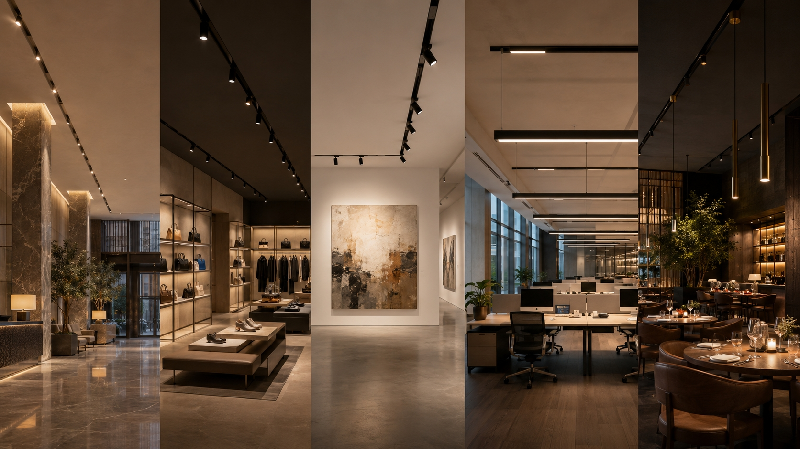

How to Specify Magnetic Track Lighting for 5 Commercial Project Types

Every commercial space has unique lighting requirements. A hotel lobby demands grandeur and warmth. A retail store needs precision and flexibility. An art gallery requires absolute color accuracy. The same magnetic track system can serve all of them — but the module selection, layout logic, and control strategy must be tailored to each environment.
This guide breaks down how to specify magnetic track lighting for five common commercial project types, with practical module recommendations and layout principles you can apply immediately.
1. Hotel Lobby & Corridor
Hospitality First Impressions That Last
The lobby is the emotional anchor of a hotel. Lighting here must feel welcoming, luxurious, and architecturally integrated — never clinical or harsh.
- Track Type: Trimless recessed 48V magnetic track, plastered flush with ceiling for seamless finish
- Primary Modules: Adjustable spotlights (10-20W, 24°-36° beam) for art and feature wall highlighting
- Ambient Layer: Linear flood modules or pendant adapters for soft, even wash
- Color Temperature: 2700K-3000K warm white to create comfort and intimacy
- Control: DALI or 0-10V dimming for day/evening scene transitions
2. Luxury Retail Store
Retail Product as Protagonist
In retail, light is a sales tool. It must make merchandise look irresistible while guiding customer flow through the space.
- Track Type: Surface-mounted or recessed track depending on ceiling height; 48V for long runs
- Primary Modules: High-CRI spotlights (CRI 95+, R9 > 50) with narrow 15°-24° beams for product focus
- Ambient Layer: Wide flood modules (60°) for general illumination between display zones
- Color Temperature: 3000K-4000K depending on brand identity; fashion often favors 3000K, electronics 4000K
- Control: Casambi or Zigbee for app-based scene scheduling and zone dimming
3. Art Gallery & Museum
Cultural Light That Honors the Work
Gallery lighting is the most technically demanding application. Color fidelity, UV filtering, and precise beam control are non-negotiable.
- Track Type: Recessed or surface track with anti-glare accessories; 48V for stability
- Primary Modules: Museum-grade spotlights with CRI 97+, R9 > 90, and SDCM < 3
- Beam Control: Framing projectors or adjustable zoom spots (10°-50°) for precise artwork framing
- Color Temperature: Tunable white (2700K-4000K) to match artwork conservation requirements
- Control: DALI 2.0 with individual fixture addressing for per-artwork calibration
4. Office & Conference Room
Workplace Productivity Meets Comfort
Modern offices need task lighting that reduces eye strain while supporting video conferencing and collaborative work modes.
- Track Type: Surface-mounted linear track for open ceilings; recessed for executive areas
- Primary Modules: Linear flood modules for uniform desk-level illumination (UGR < 19 for glare control)
- Accent Layer: Adjustable spots for branding walls and breakout area feature lighting
- Color Temperature: 4000K neutral white for focus; tunable white for circadian rhythm support
- Control: DALI with daylight harvesting sensors and occupancy detection
5. Restaurant & Hospitality
F&B Atmosphere on Demand
Restaurant lighting must transform throughout the day — bright and energetic for lunch, intimate and warm for dinner service.
- Track Type: Surface or pendant track for exposed industrial aesthetics; recessed for fine dining
- Primary Modules: Narrow spotlights (15°-24°) for table focus; pendant modules for ambient drama
- Accent Layer: Wall-wash modules for texture and material highlighting (brick, wood, stone)
- Color Temperature: 2200K-2700K for fine dining warmth; 3000K for casual daytime service
- Control: Scene preset system (DALI or wireless) with one-touch lunch/dinner/late-night modes
Quick Reference: Module Matching Matrix
| Project Type | Key Module | CRI Requirement | Recommended Control |
|---|---|---|---|
| Hotel Lobby | Adjustable Spot + Linear Flood | CRI 90+ | DALI / 0-10V |
| Retail Store | High-CRI Narrow Spot | CRI 95+ | Casambi / Zigbee |
| Art Gallery | Museum Spot / Framing Projector | CRI 97+ | DALI 2.0 |
| Office | Linear Flood (UGR < 19) | CRI 90+ | DALI + Sensors |
| Restaurant | Narrow Spot + Pendant | CRI 90+ | Scene Preset System |
Need a Project-Specific Lighting Plan?
At MAGNETRACK, we provide complimentary layout proposals for commercial projects. Share your floor plan and ceiling height — our engineering team will recommend the optimal track configuration, module mix, and driver sizing for your specific space.
Contact us for a tailored specification package.